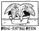
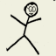
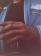
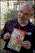

CAPTION2000
CAPTION2000

Saturday-Sunday 12-13 August 2000, at the Oxford Union Society, Oxford, England
News
The ninth annual CAPTION convention -- the first under the new committee -- has now taken place.
Comics
| D’Israeli’s A-Z of Fear, the 2-page strip he donated to the charity auction. |  Damian’s minicomc from Jeremy’s workshop |
Photos
| Action Man’s photos. New thrill! Jeremy Dennis’s Action Man took his spy camera to CAPTION2000 to take snaps of some of the attendees! | Matt Brooker’s photos. Matt traditionally brings many a strange camers with him. Here are a small selection of the results... |
Reports
(Reverse chronological order.)
A CAPTION 2000 report by Arthur Goodman at Pulp Kitchen
A Caption 2000 Report by Matthew Lawrenson
Jeremy Dennis’s report of CAPTION. (Jeremy’s a retired former committee member.)
There is a brief mention on Pete Ashton’s BugPowder.com web log for 14 August 2000.
Contacts
- Email:
caption2000@alleged.demon.co.uk - Fax: 08701 640622
- Post: 18 Hawkins Street, Oxford OX4 1YD, UK
|